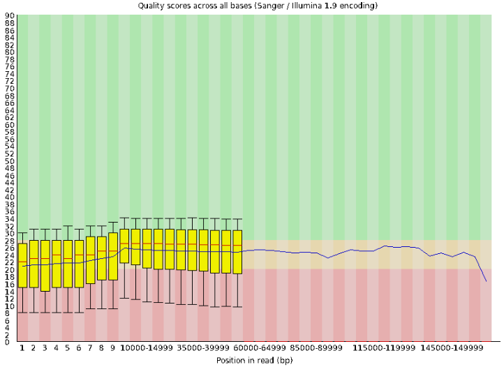
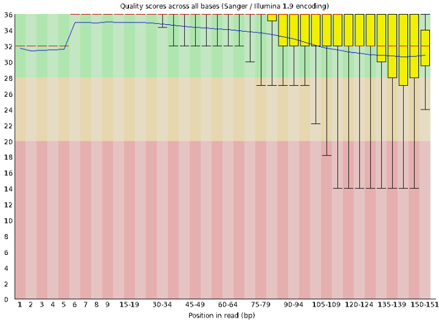
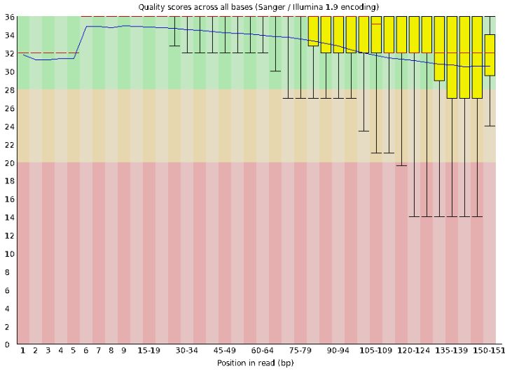
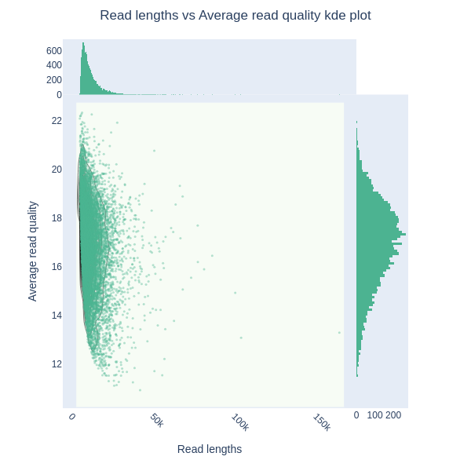
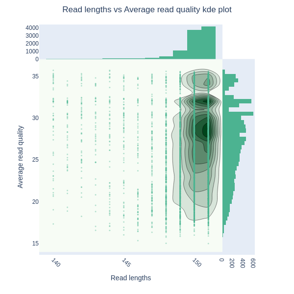

2025_Demo_Assembly/
├── bin/
└── data/Ensamble de Genoma Bacteriano

Introducción
Para este tutorial vamos a ensamblar un Genoma usando lecturas largas y cortas. Vamos a trabajar con secuencias de Clostridioides difficile.
Los siguientes pasos se realizaron utilizando una máquina Gigabyte Technology Co., Ltd. H67MA-USB3-B3 con procesador Intel® Core™ i7-2600 CPU @ 3.40GHz × 8 y 32 Gb de RAM. Con sistema Operativo Ubuntu 22.04.5 LTS.
Para todos los procesos se generó un directorio con la siguiente estructura:
IMPORTANTE ⚠️: Todas las herramientas que se vayan instalando se van a alojar en el directorio 2025_Demo_Assembly/bin.
Para cada pasó se irá generando un carpeta dentro del directorio 2025_Demo_Assembly.
Obtención de lecturas
En este paso vamos a utilizar sratoolkit, lo puedes descargar aquí según sea tu sistema operativo.
Los datos los vamos a descargar del BioProject PRJNA1148956 “Comparative study of Illumina and Nanopore sequencing for Clostridioides difficile surveillance”. Para fines demostrativos vamos a descargar lecturas largas (Nanopore) y lecturas cortas pareadas (Ilumina).
Para hacerlo usa el siguiente código en la terminal:
Lecturas largas
cd 2025_Demo_Assembly/data
prefetch SRR30483153
fasterq-dump SRR30483153Lecturas cortas
cd data
prefetch SRR30483121
fasterq-dump SRR30483121Con esto obtendremos los archivos .fastq de las lecturas con su respectiva puntuación Phred.
1. Control de Calidad
Para observar la calidad de nuestras secuencias vamos a utilizar FastQC (generalmente usado para lecturas cortas) y NanoPlot (óptimo para lecturas largas), al hacer click en cada palabra podrás acceder al sitio para poder descargarlos e instalarlos. FastQC nos mostrará los resultados de calidad en un reporte HTML interactivo, y NanoPlot generá graficos en .png de las medidas de calidad.
Para ejecutar las herramientas usa los siguientes códigos en la terminal:
Primero generamos las carpetas para depositar los resultados
mkdir 2025_Demo_Assembly/1_fastaQC/fastQC
mkdir 2025_Demo_Assembly/1_fastQC/NanoPlotFastQC
Al ejecutar fastqc se abrirá una interfaz gráfica donde podremos introducir nuestras secuencias.
fastqcLecturas largas con FastQC

Lecturas cortas con FastQC
Forward

Reverse

NanoPlot
Lecturas largas (Nanopore)
NanoPlot \
-t 6 \
--fastq data/SRR30483153.fastq \
--verbose \
--store \
-o 1_fastQC/NanoPlot/nanopore \
--tsv_stats \
--info_in_report
Lecturas cortas (Ilumina)
NanoPlot \
-t 6 \
--fastq data/SRR30483121_1.fastq data/SRR30483121_2.fastq \
--verbose \
--store \
-o 1_fastaQC/NanoPlot/ilumina \
--tsv_stats \
--info_in_report
2. Filtrado de lecturas largas
Una herramienta que nos permite filtrar lecturas largas de alta calidad y de gran longitud es FiltLong, lo puedes descargar e instalar aquí.
Filtlong lo usamos para filtrar lecturas largas basadas en calidad y longitud, reteniendo el 95% de las bases de mayor calidad (es decir, descartando el 5% peor). Sin referencias externas (como lecturas cortas de Illumina), se basa en las puntuaciones de calidad Phred del archivo FASTQ para evaluar las lecturas. El resultado se envía a stdout, se comprime con gzip y se guarda en un archivo FASTQ.gz, preparando las lecturas filtradas para pasos posteriores como el alineamiento con minimap2.
mkdir 2025_Demo_Assembly/2_filter
filtlong \
--keep_percent 95 \
data/SRR30483153.fastq | gzip > 2_filter/SRR30483153.fastq.gz3. Crear un boceto aproximado del ensamblaje
Para este punto vamos a utilizar minimap2 y miniasm, lo puedes instalar dando clic a sus respectivos nombres.
Vamos a utilizar minimap2 para realizar un alineamiento “todo contra todo” (all-vs-all) de las lecturas en un archivo FASTQ contra sí mismo. El objetivo es identificar sobrepasos (overlaps) entre lecturas largas y ruidosas, que son esenciales para el ensamblaje de novo. Los resultados se comprimen y guardan en un archivo PAF (Pairwise mApping Format), que es un formato tabular simple para almacenar alineamientos.
Y miniasm para ensamblar un grafo de sobrepasos (overlap graph) a partir de los alineamientos generados en el paso anterior y las lecturas originales. Miniasm es un ensamblador ultra-rápido basado en Overlap-Layout-Consensus (OLC), optimizado para lecturas largas y ruidosas. No corrige errores ni pule el ensamblaje; produce un borrador crudo en formato GFA (Graphical Fragment Assembly), que representa el genoma como un grafo (nodos = lecturas, aristas = sobrepasos).
bin/minimap2/minimap2 \
-x ava-pb -t 6 \
2_filter/SRR30483153.fastq.gz 2_filter/SRR30483153.fastq.gz | gzip -1 > 3_miniasm/SRR30483153.paf.gzbin/miniasm/miniasm \
-f 2_filter/SRR30483153.fastq.gz 3_miniasm/SRR30483153.paf.gz > 3_miniasm/SRR30483153.gfa4. Re-muestrear la resolución de las lecturas a una cobertura de ~100x.
Para este paso necesitamos generar código que nos permita re-muestrear basado en la cobertura y la calidad de las lecturas largas.
Primero vamos a generar un código en Python que nos ayudará a lograr, llamaremos a este archivo weighted_downsample.py
Este script realiza un muestreo aleatorio ponderado sin reemplazo de lecturas FASTQ para reducir a un número objetivo de bases (–target-bases), priorizando lecturas largas y de alta calidad. Usa pesos = longitud * (calidad_media + 1)^–qpower (default 2). Preserva lecturas específicas via –keep-ids. Es eficiente para datasets grandes, usando temporales y sort externo.
#!/usr/bin/env python3
"""
weighted_downsample.py
Muestreo ponderado por calidad (sin reemplazo) hasta alcanzar target bases.
Dependencias: Python3 (estándar), gzip, coreutils `sort` disponible en PATH.
Uso básico:
python3 weighted_downsample.py --reads reads.fastq.gz --target-bases 100000000 \
--out out.fastq.gz --tmpdir tmp_ws --qpower 2 --seed 42 --keep-ids keep_ids.txt
Opciones principales:
--qpower FLOAT : potencia aplicada a (mean_q+1) para calcular peso (default 2)
--min-meanq FLOAT: si la read tiene meanq < this, se le aplica factor menor (default 0)
--keep-ids FILE : IDs (uno por linea) de lecturas que siempre se preservan
"""
import argparse, gzip, os, sys, tempfile, math, random, shutil, subprocess
from pathlib import Path
def open_maybe_gz(path, mode='rt'):
if str(path).endswith('.gz'):
return gzip.open(path, mode)
else:
return open(path, mode)
def phred_mean_from_qual(s):
vals = [ord(c)-33 for c in s]
return sum(vals)/len(vals) if vals else 0.0
def parse_args():
p = argparse.ArgumentParser(description="Weighted downsample fastq to target bases")
p.add_argument('--reads', required=True, help='FASTQ or FASTQ.GZ input')
p.add_argument('--target-bases', type=int, required=True)
p.add_argument('--out', required=True, help='output fastq.gz')
p.add_argument('--tmpdir', required=True, help='directorio temporal (se crea si no existe)')
p.add_argument('--qpower', type=float, default=2.0, help='potencia para calidad (default 2)')
p.add_argument('--seed', type=int, default=None, help='semilla RNG')
p.add_argument('--keep-ids', default=None, help='archivo con read IDs a preservar (uno por linea)')
p.add_argument('--max-weight-epsilon', type=float, default=1e-12, help='epsilon para evitar division por cero')
return p.parse_args()
def main():
args = parse_args()
tmpdir = Path(args.tmpdir)
tmpdir.mkdir(parents=True, exist_ok=True)
random.seed(args.seed)
keep_ids = set()
if args.keep_ids and os.path.exists(args.keep_ids):
with open(args.keep_ids) as fh:
for l in fh:
if l.strip(): keep_ids.add(l.strip().split()[0])
# Files to produce
uncompressed_fastq = tmpdir / "reads.uncompressed.fastq"
meta_tsv = tmpdir / "reads.meta.tsv" # read_idx \t id \t len \t meanq \t weight
prior_tsv = tmpdir / "reads.priorities.tsv" # priority \t read_idx \t len \t id
print("Pass 1: leer FASTQ, calcular meanQ/len y escribir FASTQ sin compresión y meta info...")
total_reads = 0
total_bases = 0
with open_maybe_gz(args.reads, 'rt') as fh, open(uncompressed_fastq, 'wt') as out_fastq, open(meta_tsv, 'wt') as meta:
while True:
name = fh.readline()
if not name:
break
seq = fh.readline().rstrip('\n')
plus = fh.readline()
qual = fh.readline().rstrip('\n')
if not qual:
break
rid = name.split()[0].lstrip('@').strip()
rlen = len(seq)
meanq = phred_mean_from_qual(qual)
total_reads += 1
total_bases += rlen
# peso: length * (meanq + 1)^qpower (evita cero)
weight = rlen * ((meanq + 1.0) ** args.qpower)
if weight <= 0:
weight = args.max_weight_epsilon
# write uncompressed fastq
out_fastq.write(f"{name}{seq}\n+\n{qual}\n")
meta.write(f"{total_reads-1}\t{rid}\t{rlen}\t{meanq:.4f}\t{weight:.8e}\n")
print(f"Total reads: {total_reads}, total bases: {total_bases:,}")
# Always include keep_ids first and count their bases
included_idx = set()
accumulated = 0
if keep_ids:
print("Incluyendo lecturas en keep-ids...")
with open(meta_tsv) as meta:
for line in meta:
idx, rid, rlen, meanq, weight = line.split('\t')
if rid in keep_ids:
included_idx.add(int(idx))
accumulated += int(rlen)
print(f"Bases acumuladas tras keep-ids: {accumulated:,}")
if accumulated >= args.target_bases:
print("Ya alcanzado target con keep-ids. Copiando sólo esas lecturas al output.")
write_selected_reads(uncompressed_fastq, included_idx, args.out)
print("Hecho.")
return
print("Pass 2: generar prioridades aleatorias ponderadas y ordenar (usando sort externo)...")
# generar prioridades y volcarlas a prior_tsv (unsorted)
with open(meta_tsv) as meta, open(prior_tsv, 'wt') as pr:
for line in meta:
idx, rid, rlen, meanq, weight = line.strip().split('\t')
idx_i = int(idx); rlen_i = int(rlen); weight_f = float(weight)
if idx_i in included_idx:
# ya incluido por keep_ids -> dar prioridad altísima (0) para que quede primero
pr.write(f"{0.0:.12e}\t{idx_i}\t{rlen_i}\t{rid}\n")
continue
# prioridad = -ln(u) / weight (u in (0,1])
u = random.random()
# avoid u==0
if u <= 0.0:
u = 1e-300
priority = -math.log(u) / max(weight_f, args.max_weight_epsilon)
pr.write(f"{priority:.12e}\t{idx_i}\t{rlen_i}\t{rid}\n")
# Sort numerically by priority (column 1). Use external sort for scalability.
sorted_prior = tmpdir / "reads.priorities.sorted.tsv"
sort_cmd = ["sort", "-n", "-k1,1", str(prior_tsv), "-o", str(sorted_prior)]
print("Ejecutando:", " ".join(sort_cmd))
subprocess.check_call(sort_cmd)
print("Seleccionando lecturas por prioridad hasta alcanzar target bases...")
with open(sorted_prior) as sp:
for line in sp:
priority, idx, rlen, rid = line.strip().split('\t')
idx_i = int(idx); rlen_i = int(rlen)
if idx_i in included_idx:
# ya sumado
continue
included_idx.add(idx_i)
accumulated += rlen_i
if accumulated >= args.target_bases:
break
print(f"Lecturas seleccionadas: {len(included_idx)}, bases acumuladas: {accumulated:,} (target {args.target_bases:,})")
print("Pass 3: escribir FASTQ final con lecturas seleccionadas...")
write_selected_reads(uncompressed_fastq, included_idx, args.out)
print("Limpieza temporal (no borro tmpdir automáticamente).")
print("Salida:", args.out)
def write_selected_reads(uncompressed_fastq_path, included_idx_set, outpath):
# escribe FASTQ.gz con las lecturas cuyo índice está en included_idx_set
with open(uncompressed_fastq_path, 'rt') as fh, gzip.open(outpath, 'wt') as out:
idx = 0
while True:
name = fh.readline()
if not name:
break
seq = fh.readline().rstrip('\n')
plus = fh.readline()
qual = fh.readline().rstrip('\n')
if idx in included_idx_set:
out.write(f"{name}{seq}\n+\n{qual}\n")
idx += 1
if __name__ == '__main__':
main()Y otro archivo en bash al que llamaremos RUN_sample_100x.sh, este script Bash calcula bases objetivo para ~100x cobertura basada en un ensamblaje GFA, genera IDs a preservar (lecturas mapeadas a contigs pequeños, e.g., plásmidos <10k bp), y ejecuta el script Python para downsampling.
# variables
READS="2_filter/SRR30483153.fastq.gz"
GFA="3_miniasm/SRR30483153.gfa"
TARGET_COV=100
OUTDIR="downsample_SRR30483153_weighted"
TMP="$OUTDIR/tmp"
mkdir -p "$OUTDIR" "$TMP"
# calcular tamaño de ensamblaje (sumar secciones S del GFA)
ASSEMBLY_BP=$(awk '/^S/ { if($3=="*" || $3=="") print 0; else print length($3) }' "$GFA" | awk '{s+=$1} END{print s+0}')
echo "Assembly (bp): $ASSEMBLY_BP"
TARGET_BASES=$(( ASSEMBLY_BP * TARGET_COV ))
echo "Target bases (~${TARGET_COV}x): $TARGET_BASES"
# si no hay suficiente cobertura, no tocar
CURR_BASES=$(zcat "$READS" | awk 'NR%4==2{sum+=length($0)} END{print sum+0}')
echo "Bases reads: $CURR_BASES"
if [ "$CURR_BASES" -le "$TARGET_BASES" ] ; then
echo "Cobertura <= ${TARGET_COV}x; no se re-muestrea."
exit 0
fi
# (opcional) generar keep_ids si quieres preservar lecturas que mapearon a contigs pequeños
# PLASMID_THRESHOLD=10000
PLASMID_THRESHOLD=10000
awk '/^S/ { if($3=="*" || $3=="") seq=""; else seq=$3; print ">"$2"\n"seq }' "$GFA" > "$OUTDIR/assembly.fa"
minimap2 -t 8 -ax map-ont "$OUTDIR/assembly.fa" "$READS" | samtools view -F 4 -h - > "$OUTDIR/mappings.sam"
awk '/^>/ { if(name){ print name"\t"len } name=substr($0,2); len=0; next } { len+=length($0) } END{ if(name) print name"\t"len }' "$OUTDIR/assembly.fa" > "$OUTDIR/contig_lengths.tsv"
awk -v TH="$PLASMID_THRESHOLD" '$2 < TH {print $1}' "$OUTDIR/contig_lengths.tsv" > "$OUTDIR/small_contigs.txt"
awk 'NR==FNR{a[$1]; next} !/^@/ && ($3 in a){ print $1 }' "$OUTDIR/small_contigs.txt" "$OUTDIR/mappings.sam" | sort -u > "$OUTDIR/keep_ids.txt"
echo "Keep IDs: $(wc -l < "$OUTDIR/keep_ids.txt")"
# ejecutar el script
python3 weighted_downsample.py \
--reads "$READS" \
--target-bases "$TARGET_BASES" \
--out "$OUTDIR/reads_approx_${TARGET_COV}x.weighted.fastq.gz" \
--tmpdir "$TMP" \
--qpower 2.0 \
--seed 42 \
--keep-ids "$OUTDIR/keep_ids.txt"